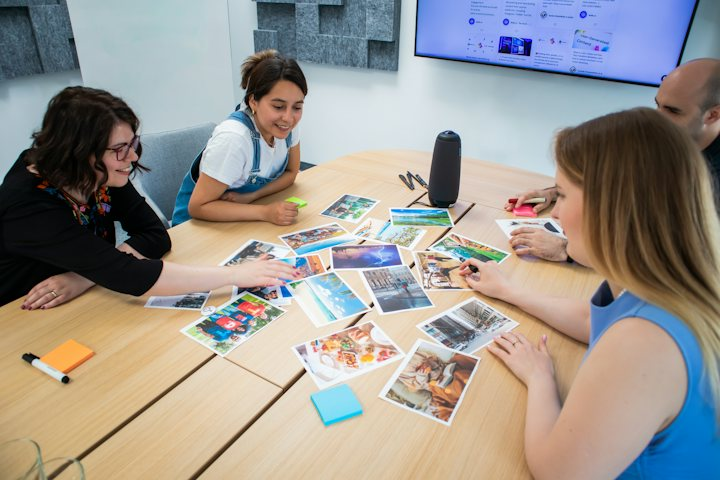

Warm-up · What should we change first?

Think about your own plant. Score each change for impact and for effort. Rank them. Then say your number one out loud, with a reason.
Score it, rank it, say your number one
Said 0 / 1Teacher notes · §1 Warm-up
Pedagógica
- El alumno puntúa tres cambios de planta (impacto y esfuerzo del 1 al 5) según SU realidad, la app los ordena y él DICE I think we should change … first, because the impact is … and the effort is …. Todavía no presentes should como regla: escucha qué usa por instinto (I must / I can / maybe). El botón de "I said it" solo aparece después de ordenar.
- Línea del desacuerdo: unos dicen que se cambia primero lo que más duele; otros dicen que se cambia primero lo que más impacto da con menos esfuerzo. No resuelvas: es el motor de la sesión.
- Máximo 4 minutos. Tema: Seguro (cambios ficticios, nada personal). Temperatura: Engaging. Prueba del micrófono apagado: sin decir la frase no se cierra el calentamiento. Reciclaje (R10): quick win y low risk de S17 pueden salir en la razón del alumno.
Engagement
- "Los números son tuyos. Si tu planta es distinta, cambia el orden." Pide la razón antes de mostrar el cierre.
- Cierra en voz alta con el recuadro verde.
Crecimiento
- Anota con qué verbo expresa la recomendación (must / can / I think / maybe): línea base para §3.
- Riesgo: Seguro. Temperatura: Engaging.
Vocabulary · 12 words to talk about change

Tap to flip · listen to the word and the example
0 / 12 flippedRead the message. Find the wrong word, or say there is none. Then say it right
Found 0 / 51. Read each message. 2. Tap the word that is wrong. If the message is perfect, tap “No wrong word”. 3. Say the CORRECT message out loud. 4. Tap “I said it”. One message has no mistake.
Plant one wrong word. Your partner finds it
Say ONE sentence about a change at your plant using a word from today. Put one wrong word in it on purpose. Your partner finds it and says the sentence right. 1:1: the teacher finds it.
Teacher notes · §2 Vocabulary
Pedagógica
- Voltea cada tarjeta: tú dices la palabra, el alumno repite y da su ejemplo. Palabras difíciles: outdated (aut-DEI-tid), impact (IM-pakt, sustantivo), effort (EF-ert), worth (werz). I think we should … y We shouldn’t … yet son patrones y se enseñan completos.
- VOC-11 The Wrong Word Costs (IMPOSTOR): la versión de clase es que durante TODA la sesión plantas tres palabras mal usadas en momentos normales (p. ej. actual por current, assist por attend, eventually por possibly) y quien las caza levanta la mano y las corrige. Anota el minuto aproximado de cada una. En la pantalla, seis mensajes: cinco con una palabra plantada (actual, worth of, impact in, do an effort, realize) y UNO limpio; el alumno decide si hay impostor, toca la palabra y dice el mensaje correcto en voz alta antes de seguir.
- escalation_note (la dinámica vuelve de S10): en S10 los errores eran frases cortas siempre con impostor; ahora un mensaje es limpio (hay que atreverse a decir "no hay error"), los errores son colocaciones típicas del hispanohablante y la reparación es un mensaje completo dicho en voz alta. Cierra con el Paso C: el alumno planta su propia palabra.
- Límites: sin would ni hipótesis. Prueba del micrófono apagado: cada mensaje exige "I said it" y el Paso C exige que el compañero la encuentre. No es un ejercicio de huecos: no hay renglón en blanco ni opciones.
Engagement
- "No leas la corrección: dila antes de tocar I said it."
- Cierra en voz alta: "I found __ wrong words. The clean message was number __."
Crecimiento
- Anota qué colocaciones fallan más (worth of, do an effort, impact in) para el cierre de §7.
- Venta: el mismo juego sirve con las falsas amistades de la planta (actual, realize, assist).
Grammar · should · shouldn’t · What should we …?
Read the chat. Find four ways to ask for, give or hold back a recommendation. Say them out loud.

Three things are slow on Line four. What should we change first?
I think we should change the printer first. It is outdated.
And the packing table? We shouldn’t change it yet. It works.
Agree. The first thing to change is the printer.
should · shouldn’t · What should we …?
1 · Recommend
I think we should change the printer first.
2 · Hold back
We shouldn’t change the table yet.
3 · Ask
What should we change first?
| Statement, negative, question | Notice | |
|---|---|---|
| + | I think we should change the printer first. The first thing to change is the printer. | should + the base verb, the same for every person. “The first thing to change is …” names it. |
| − | We shouldn’t change the table yet. It works for now. | shouldn’t + the base verb. “Yet” means: not now, maybe later. |
| ? | What should we change first? Should we replace it or repair it? | What should we + verb? Should we + verb? |
Never: should to change · shoulds · we don’t should change. After should, use the base verb. Use should to put YOUR priority on the table and give a reason.
¿Qué es? Should sirve para recomendar lo que conviene hacer primero: I think we should + verbo. Para decir que algo todavía no conviene, we shouldn’t … yet.
¿Cómo se usa? Después de should va el verbo sin to y sin -s: she should change. Para preguntar: What should we change first? No es una orden: have to es obligación; should es tu recomendación; could es solo una opción.
¿Para qué hoy? Para decir qué cambiarías primero (sin usar would), por qué y qué debe esperar.
Cuidado: no se dice should to change ni we don’t should.
Which message does the job? Pick it, then say it
Same fact, three messages. Rank them, then say why your number one fits
Said 0 / 31. Read the situation. 2. Tap the messages in order: 1 = fits best, 3 = fits least. 3. Say out loud WHY your number one fits. 4. Tap “I said why” to see the reference. You earn points for your reason, not for guessing.
Your plant. Your priority. Three moves
Said 0 / 3Each card is one move. Use something that is true for your work. Say it, check what you did, then tap “I said it”.
Mistakes at this level
Teacher notes · §3 Grammar
Pedagógica
- Un solo punto: should / shouldn’t para recomendar y frenar prioridades (I think we should … first · We shouldn’t … yet · What should we …? · The first thing to change is …). Block 3 admite could/should; aquí should es SOLO recomendación (no obligación fuerte, no would, no hipótesis; el título "What Would You Change First?" se responde con I think we should …, nunca se produce would hasta S25). Explicación continua ≤5 min; el botón en español está oculto por defecto.
- Practice A (mecánica, controlada) = decide y dilo: tres casos con tres mensajes completos y correctos; solo uno cumple el trabajo. Máximo 1/3 del bloque.
- GRM-12 Same Fact, Three Frames (RANKING), etapa meaningful: el mismo hecho dicho con have to, should y could; el alumno los ordena de mejor a peor ajuste y DICE por qué su número uno es el adecuado antes de ver la referencia. Se puntúa decir la razón, no acertar de suerte. Enseña uso, no forma. Referencia: S1 have to > should > could; S2 should > could > have to; S3 could > have to > should (puede discutirse: gana quien da razón). escalation_note (la dinámica vuelve de S9): en S9 se elegía el marco; ahora se ordenan los tres y la razón se dice en voz alta.
- Practice C (comunicativa): tres movimientos propios (recomendar, frenar, preguntar). Frases de rescate visibles. Límites: sin would ni hipótesis (S25), sin reported questions, sin negociación compleja. Sin ejercicios de hueco.
Engagement
- "No leas la referencia antes de decir tu razón." El botón de ver la referencia solo aparece después del "I said why".
- En Practice C, si el alumno dice I think we must, acepta y pídele una variante con should.
Crecimiento
- Anota cuántos de los tres movimientos del C usaron should sin ayuda: línea base para S19.
- Venta: distinguir have to / should / could es lo que más confunde al supervisor hispanohablante al dar instrucciones.
Listening · Two voicemails, one plan
Marco, a night-shift supervisor, has two voicemails. The second one changes the first. Listen (two times at most). Then pass the message on to someone who did NOT hear it, so they can act.
Practice audio: your browser voice (not a real accent).
The night team needs the plan. Which message do you pass on?
Take the message out loud. Your partner confirms it
You: tell the plan in 45 seconds, in your own words. No script. Your partner: do NOT open the script. Ask one confirming question: “So we should …, right?”. 1:1: the teacher is the partner.
You
Your partner
The script (two voicemails for Marco)
Siobhan · Irish English · female · plant manager, calm, clear, natural pace | Kofi · Ghanaian English · male · maintenance technician, friendly, natural paceListen · repeat · record your best
Teacher notes · §4 Listening
Pedagógica
- LIS-07 Take the Message (OCULTAMIENTO): el alumno escucha DOS recados de voz (el segundo corrige al primero), máximo dos reproducciones, y pasa el mensaje a quien no lo escuchó. El receptor no abre el guion: la información está oculta para él. Task 1 es la única pregunta de idea general (decide y pasa el recado); no hay preguntas literales de detalle con opciones. Task 2: el alumno cuenta el plan en 45 s sin guion y el compañero confirma con So we should …, right?; el receptor marca si puede actuar. escalation_note (la dinámica vuelve de S7): en S7 había un solo recado; ahora hay dos y el segundo corrige al primero, así que hay que pasar la versión final.
- Guion: 161 palabras (tope ~200), 2 hablantes en dos recados. Contiene I think we should una vez, we should dos veces más, should not una, y el léxico outdated, impact, effort, worth the effort, keep it as it is, replace (por contexto). Sin would ni hipótesis. Marca [pause] no usada.
- Para grabar (10 clips, uno por línea): Siobhan = inglés irlandés, mujer, calmada, ritmo natural · Kofi = inglés de Ghana, hombre, amable, ritmo natural. Cumple el mínimo de acento no nativo del programa (Kofi; Siobhan es variedad nativa no estándar). Confirmar con un clip de muestra que las voces elegidas dan ambos acentos de forma confiable.
- Clave: plan final = reparar la impresora el jueves (no comprar una nueva todavía), parar la línea 20 minutos el jueves a las diez, actualizar la hoja de relevo antes del viernes y no tocar la mesa de empaque este mes. Task 1: el mensaje A.
Engagement
- "Dos veces como máximo. Después, a contarlo." Si el alumno abre el guion antes de decir el plan, repite la toma.
- Si el receptor no puede actuar, pídele que haga una pregunta más antes de cerrar.
Crecimiento
- "In the speaking block you hold the chair, so listen for reasons you can reuse."
- Registra qué parte olvidó (¿el jueves? ¿lo que no se toca?) y si usó should al contarlo.
Speaking · The hot seat: hold the chair

1. You are the Change Owner. 2. A new question arrives every 15 seconds. 3. Answer with a reason, then tap “Answered”. 4. If you stop for 4 seconds or switch to Spanish, tap “I slipped”: the chair ends. 5. Three rounds. Each one is harder.
1:1: the teacher asks the questions. You can ignore the cards.
Your change
Best 0 s · Points 012 questions · always 2 follow-ups
Teacher notes · §5 Speaking
Pedagógica
- SPK-01 The Chair (CONTRARRELOJ): el alumno ocupa la silla 90 segundos; cada 15 s llega una pregunta nueva y debe contestarla en inglés con una razón. Si se queda 4 s en silencio o pasa al español, pulsa I slipped y la silla termina: se registra cuántos segundos sostuvo. En grupo, tú o el compañero hacen las preguntas (las tarjetas son apoyo); en 1:1 tú preguntas. escalation_note (la dinámica vuelve de S10): en S10 eran 90 s de preguntas del grupo sin tema; ahora hay tres rondas con condición nueva: (1) su propio cambio, (2) un cambio que le tocó defender aunque no lo elija, (3) "hold back": defender lo que NO se cambia todavía.
- Puntaje: cada Answered vale 5 y sostener los 90 s suma 15. Se cuentan respuestas dichas y segundos sostenidos, no velocidad. Récord personal visible. Entre rondas usa las 12 preguntas del mazo (~3 min). Tema: Seguro (cambios ficticios). Prueba del micrófono apagado: sin pulsar Answered no hay puntos y la silla no cierra la ronda con resultado.
- El "Answered" y el "I slipped" son autodeclarados. Pide al compañero o a ti mismo que confirme. Cierra cada ronda con el resultado declarado en voz alta: "I held the chair __ seconds."
- Frases de rescate visibles: I think we should … first, because … · The impact is … but the effort is … · We shouldn’t … yet, because … · It is worth the effort because …. Usarlas cuenta a favor.
Engagement
- "Una razón por pregunta. Si te trabas, usa una frase de rescate." Si el alumno se frena, no lo rescates en voz: señala la frase.
- Ronda 2: no le dejes cambiar la carta; el reto es defender algo que no escogió.
Crecimiento
- Registra el mejor tiempo, cuántas respuestas con razón y si usó should o volvió a I think maybe.
- Venta: la silla caliente es la prueba de presión que este alumno dice que no puede pasar. Aquí la pasa en 90 s.
Mission · The change list brief

The Change List Brief
You lead a small team. Your manager asks you three times this week: what should we change first? For each case name the problem and two possible changes, say the impact and the effort, recommend one with a reason, and say what we shouldn’t change yet.
Group: each case goes to one student in a breakout room. Your partner asks “Why not the other one?” once per case. Rotate every 3 minutes.
1:1: you brief the teacher. The teacher asks “Why not the other one?” once per case.
Success: 3 briefs, each with two possible changes, impact and effort, “I think we should … first, because …”, and “We shouldn’t … yet”.
Choose one case. In 60 seconds recommend ONE change, say why the other one is not first, and say what you will do this week. No cards, no reading.
Teacher notes · §6 Mission
Pedagógica
- Marca cada movimiento solo cuando el alumno lo dice sin leer la tarjeta.
- Evidencia observable: dos cambios posibles, impacto y esfuerzo, I think we should … first, because …, We shouldn’t … yet y una petición de inicio. La clave está en Teacher view. Es válido recordar We could … y quick win (S17).
- Segunda toma con condición nueva: el jefe dice "un solo cambio" y pregunta por qué no el otro; 60 s sin mirar tarjetas. Esa toma es la evidencia individual sin apoyos: anótala en el Registro si se logró.
- Las cifras de los casos son ficticias. No interrumpas: el feedback va en §7.
Engagement
- Anuncia: "__ of 12 moves."
- Si alguien solo describe el problema, pregunta "What should we change first?" una vez.
Crecimiento
- "In Session 19 you write a rule that improves the team."
- Conecta con la tarea final: una conversación estratégica de 3–4 minutos donde recomiendas qué cambiar primero y defiendes la decisión.
Wrap-up · Better the second time
✓ Success
↑ Upgrade
✎ Repair
↻ 2nd try
Repeat one brief with the teacher. Use the upgrades. Same task, better English.
60 seconds · pick the message, then say it
My second try is better because…
You can recommend what to change first, say what should wait, and defend your choice.
Homework: record a 60-second message for your manager: one thing at your plant that we should change first and why, and one thing we shouldn’t change yet. Use should / shouldn’t and the words impact and effort. Next: Session 19 · A Rule That Would Improve the Team.
Teacher notes · §7 Wrap-up
Pedagógica
- Máximo 2 aciertos y 3 correcciones de alto valor, anónimas. Luego segundo intento de un brief de la misión contigo.
- Revisa los errores del punto: should to change, don’t should, shoulds, y las colocaciones de §2 (worth of, impact in, do an effort). El cierre es oral: cada reactivo es "elige el mensaje y dilo".
Engagement
- Compara con el §1: "Minute 1: the impact is … Minute 58: I think we should … first, because … We shouldn’t … yet."
Crecimiento
- Registra: récord de la silla (§5), si la toma sin apoyos de la misión se logró, la clasificación de marcos (§3) y el receptor de §4.
- Antes de S19: pide que piense una regla que mejoraría su equipo y por qué.